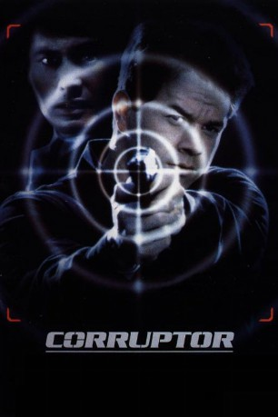
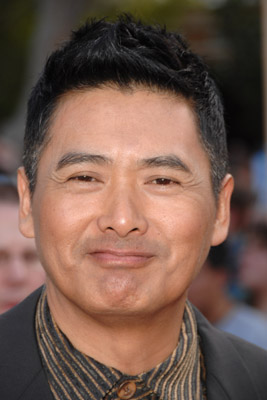
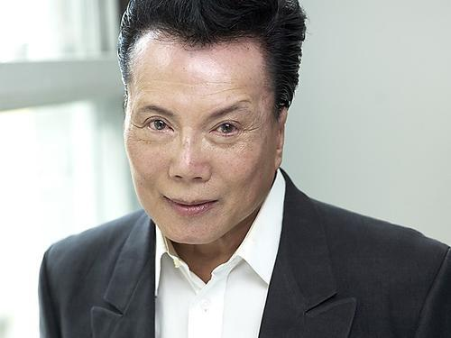
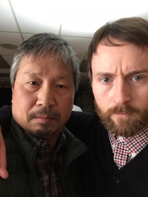
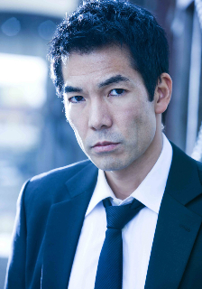
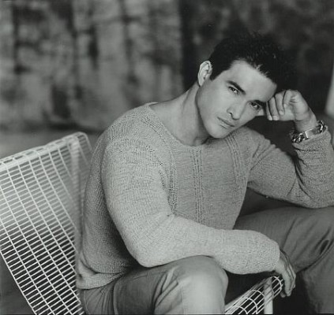
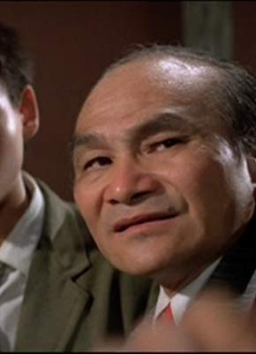
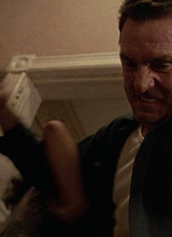
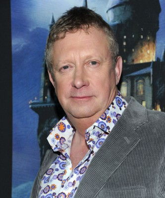

#862 Corruptor - Im Zeichen der Korruption
Alternativ: The Corruptor
 
 IMDB-Wertung: 6.0 / 10
IMDB-Wertung: 6.0 / 10  Metascore: 56
Metascore: 56 
Danny Wallace ist der Neuling im Police Department von New Yorks Chinatown, und als Nicht-Chinese erst einmal allerhand Mißtrauen ausgesetzt. Mit der Zeit gelingt es ihm jedoch, Senior-Partner Nick Chen von seinen Qualitäten zu überzeugen und dessen Freundschaft zu gewinnen. Chen macht Danny daraufhin mit den komplizierten Korruptionsritualen von Chinatown bekannt, an denen u.a. Chen selbst partizipiert. Keine leichte Situation für Danny, der den Kollegen fast so lieb gewonnen hat wie seinen Job als interner Ermittler.
Jahr: 1999
Dauer: 110 Minuten
FSK: 18
Land: USA Studio: New Line CinemaTonspuren: DD5.1 - ,
Untertitel: Deutsch,
Auflösung: 1080p (1920x800) Größe: 7116 MB
Genre: Action, Krimi, Drama, Mystery, Thriller
Regisseur: James Foley
Drehbuch: Robert Pucci
Soundtrack: Junior Cyrus Baron, Carter Burwell
Darsteller:
-  Yun-Fat Chow als Nick Chen
 Mark Wahlberg als Danny Wallace
Mark Wahlberg als Danny Wallace-  Ric Young als Henry Lee
 Paul Ben-Victor als Schabacker
Paul Ben-Victor als Schabacker- Jon Kit Lee als Jack
- Andrew Pang als Willy Ung
 Brian Cox als Sean Wallace
Brian Cox als Sean Wallace Byron Mann als Bobby Vu
Byron Mann als Bobby Vu Kim Chan als Benny Wong
Kim Chan als Benny Wong-  Ho Chow als Black Eyes
- Marie Matiko als May
-  Byron Lawson als Tall Kid
 Frank Pellegrino als Large Agent
Frank Pellegrino als Large Agent- Tovah Feldshuh als U.S. Attorney Margaret Wheeler
-  Tig Fong als Sumo Guard
 Karen Huie als Woman in Brothel
Karen Huie als Woman in Brothel- Lucille Soong als Elderly Immigrant
- Alice Lee Chun als Frightened Woman
- Peter Loung als Martial Artist , uncredited
- Elizabeth Lindsey als Louise Deng
- Bill MacDonald als Vince Kirkpatrick
- Susie Trinh als Amy San
- Olivia Yap als Tai
- Lynda Chiu als Kim
-  Pak-Kwong Ho als Phan Ho
- Tim Progosh als Lackey
-  Beau Starr als Captain Stan Klein
- LeRoy Allen als Guard One
- Simon B. Cotter als Lawyer
- Chuck Scarborough als Himself - TV Reporter
- Mike Jung als Doctor
- Howard Hoover als Smaller Agent
-  Mark Williams als Co. Captain
- Alice Poon als Masseuse
- Jason Ting als Young Boy
- Arthur Lo als Man on Street
- Lili Salman als Street Fight Onlooker , uncredited
Datei: X:\FSK18-1900-1999\Corruptor - Im Zeichen der Korruption (1999, FSK18, 1920x800).mkv seit 08.04.2015
Festplatte: FSK18
 Es gibt insgesamt 108 Filme in der Gruppe 'FSK18-1900-1999'
Es gibt insgesamt 108 Filme in der Gruppe 'FSK18-1900-1999'